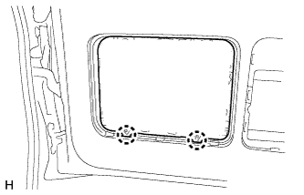
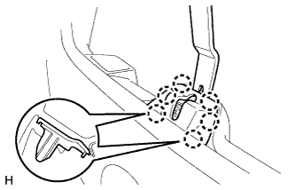
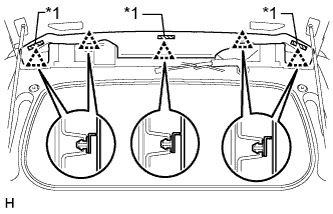
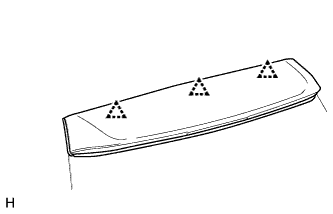
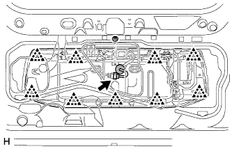
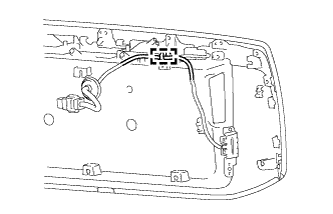

BACK DOOR > DISASSEMBLY |
| 1. REMOVE BACK DOOR CENTER GARNISH |
 |
Detach the 4 clips and remove the back door center garnish.
| 2. REMOVE BACK DOOR SIDE GARNISH LH |
 |
Detach the 2 clips and claw and remove the back door side garnish.
| 3. REMOVE BACK DOOR SIDE GARNISH RH |
 |
Detach the 2 clips and claw and remove the back door side garnish.
| 4. REMOVE BACK DOOR TRIM COVER |
 |
Remove the back door trim cover as shown in the illustration.
| 5. REMOVE UPPER TOOL BOX PANEL SUB-ASSEMBLY |
 |
Remove the upper tool box panel sub-assembly as shown in the illustration.
| 6. REMOVE TOOL CASE |
|  |
Detach the 2 claws and remove the tool case.
| 7. REMOVE BACK DOOR LOCK COVER |
|  |
Using moulding remover B, detach the clip and 6 claws and remove the back door lock cover.
| 8. REMOVE BACK DOOR TRIM PANEL ASSEMBLY |
 |
Detach the claw and remove the cover.
 |
Remove the screw.
 |
Remove the bolt.
Detach the 15 clips and remove the back door trim panel assembly.
| 9. REMOVE TOOL BOX BRACKET |
 |
Remove the 4 bolts and 2 tool box brackets.
| 10. REMOVE BACK DOOR SERVICE HOLE COVER |
 |
Remove the service hole cover.
| 11. REMOVE BACK DOOR LOCK ASSEMBLY |
Disconnect the connector.
Using a T30 "TORX" wrench, remove the 3 screws.
 |
Disconnect the cable and remover the back door lock assembly.
Remove the door lock wiring harness seal from the back door lock assembly.
| 12. REMOVE BACK DOOR LOCK CONTROL CABLE ASSEMBLY |
Disconnect the cable.
| 13. REMOVE BACK DOOR OUTSIDE HANDLE LH |
Remove the 2 nuts and back door outside handle.
Disconnect the cable.
| 14. REMOVE REAR TELEVISION CAMERA ASSEMBLY |
 |
Disconnect the connector.
Remove the 2 bolts and rear television camera.
| 15. REMOVE LOWER BACK DOOR OUTSIDE GARNISH MOULDING LH |
 |
Using a screwdriver, detach the 5 claws and remove the outside garnish moulding.
| *1 | Protective Tape |
| 16. REMOVE LOWER BACK DOOR OUTSIDE GARNISH MOULDING RH |
 |
Detach the 5 claws and remove the moulding.
| 17. REMOVE LOWER BACK DOOR GARNISH SUB-ASSEMBLY OUTSIDE LH |
 |
Disconnect the connector and detach the clamp.
Remove the screw.
Detach the double-sided tape.
Using a screwdriver, detach the 5 claws and remove the outside garnish.
| *1 | Protective Tape | *2 | Double-sided Tape |
| 18. REMOVE LOWER BACK DOOR GARNISH SUB-ASSEMBLY OUTSIDE RH |
Remove the screw.
| *1 | Double-sided Tape | - | - |
Detach the 4 claws and remove the lower door garnish sub-assembly outside.
| 19. REMOVE GLASS HATCH OPENER SWITCH ASSEMBLY |
 |
Remove the screw and opener switch.
| 20. REMOVE SWITCH COVER |
 |
Remove the switch cover.
| 21. REMOVE NO. 2 BACK DOOR WEATHERSTRIP |
Remove the No. 2 back door weatherstrip.
| 22. REMOVE BACK DOOR SIDE FEMALE STOPPER SUB-ASSEMBLY LH |
 |
Remove the 2 bolts and back door side female stopper sub-assembly.
| 23. REMOVE BACK DOOR NO. 2 STOPPER CUSHION |
Remove the back door No. 2 stopper cushion.
| 24. REMOVE BACK DOOR NO. 1 STOPPER |
 |
Using a clip remover, detach the 2 claws and remove the back door No. 1 stopper.
| 25. REMOVE BACK DOOR PANEL CUSHION |
Remove the 4 back door panel cushions.
| 26. REMOVE BACK WINDOW LOCK ASSEMBLY |
 |
Disconnect the connector.
Remove the 3 bolts and back window lock assembly.
| 27. REMOVE REAR NO. 1 SPOILER COVER |
|  |
Detach the fastening tape and 5 clips and remove the rear No. 1 spoiler cover.
| *1 | Fastening Tape |
| 28. REMOVE REAR SPOILER COVER RH |
 |
Put protective tape around the rear spoiler cover.
Using a screwdriver, detach the 2 clips and remove the rear spoiler cover as shown in the illustration.
| *1 | Protective Tape |
| 29. REMOVE REAR SPOILER SUB-ASSEMBLY |
 |
Disconnect the connector.
 |
Remove the 6 bolts.
|  |
Detach the 3 clips and rear spoiler.
| 30. REMOVE REAR WASHER NOZZLE SUB-ASSEMBLY |
 |
Disconnect the hose.
 |
Detach the 2 claws and remove the washer nozzle.
| 31. REMOVE REAR WIPER ARM |
Remove the nut and rear wiper arm.
| 32. REMOVE REAR WIPER MOTOR ASSEMBLY |
Disconnect the connector.
Remove the 3 bolts.
Detach the 2 guides and remove the rear wiper motor.
| 33. REMOVE BACK DOOR LOCK STRIKER COVER |
 |
Using a moulding remover, detach the 3 claws and remove the lock striker cover.
| 34. REMOVE BACK WINDOW STAY ASSEMBLY LH |
 |
Using a screwdriver, remove the 2 stop rings as shown in the illustration, and then remove the back window stay.
| *1 | Protective Tape |
| 35. REMOVE BACK WINDOW STAY ASSEMBLY RH |
| 36. REMOVE BACK DOOR STAY BOLT |
 |
Remove the 2 back door stay bolts.
| *A | for RH Side |
| *B | for LH Side |
| 37. REMOVE BACK DOOR GLASS |
Disconnect the connector and detach the 2 clamps.
 |
Remove the 4 bolts and back window glass.
| 38. REMOVE REAR BUMPER BAR PLATE |
Put protective tape around the rear bumper bar plate.
Detach the 14 claws and remove the rear bumper bar plate.
| *1 | Protective Tape |
| 39. REMOVE BACK DOOR CHECK |
 |
Remove the 2 bolts
Using a clip remover, detach the clip and remove the back door check with back door lower damper stay bracket.
Detach the wire harness clamp.
Remove the 3 bolts and back door check with back door lower damper stay bracket.
| 40. REMOVE BACK DOOR LOWER DAMPER STAY BRACKET LH |
Back Door Side:
 |
Using a screwdriver, remove the stop ring as shown in the illustration, and then remove the back door check.
Using a clip remover, detach the clip and remove the back door damper stay bracket.
Bumper Side:
 |
Using a screwdriver, remove the stop ring as shown in the illustration, and then remove the back door check.
| 41. REMOVE BACK DOOR OUTSIDE GARNISH SUB-ASSEMBLY |
|  |
Disconnect the connector and remove the nut.
Detach the 9 clips and remove the back door outside garnish.
| 42. REMOVE NO. 1 BACK DOOR GARNISH RETAINER |
 |
Remove the 3 screws and No. 1 back door garnish retainer.
| 43. REMOVE BACK DOOR ELECTRICAL KEY SWITCH |
|  |
Detach the clamp.
 |
Remove the 2 screws.
Detach the 2 guides and remove the back door electrical key switch.
| 44. REMOVE LICENSE PLATE LIGHT ASSEMBLY |
 |
Disconnect the connector.
Remove the 2 screws and lights.